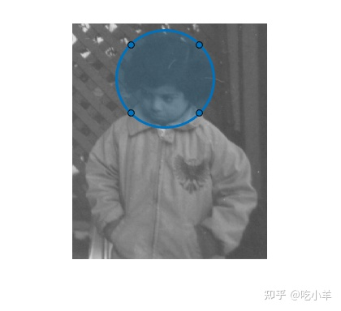

Home
将灰度图像读入工作区。
I = imread('pout.tif');
imshow(I)
在图像上绘制一个感兴趣的区域以指定要过滤的区域。使用函数drawcircle创建感兴趣区域，指定圆心和圆半径。或者，如果您想以交互方式绘制圆，则不要指定圆的中心或半径。
hax = drawcircle(gca,'Center',[115 69],'Radius', 60);

使用createMask函数创建蒙版并指定 ROI。
mask = createMask(hax);
定义要用作过滤器的函数。这个名f的函数，将输入图像传递x给imsharpen函数，并使用'Amount'名称-值对参数指定锐化效果的强度。
f = @(x)imsharpen(x,'Amount',3)
f = function_handle with value:
@(x)imsharpen(x,'Amount',3)
使用roifilt2函数过滤 ROI，并指定图像、蒙版和过滤函数。
J = roifilt2(I,mask,f);
显示结果。
imshow(J)
======================================================================
我的测试结果及程序
下面是我测试的代码：

注：本文根据MATLAB官网内容修改而成。